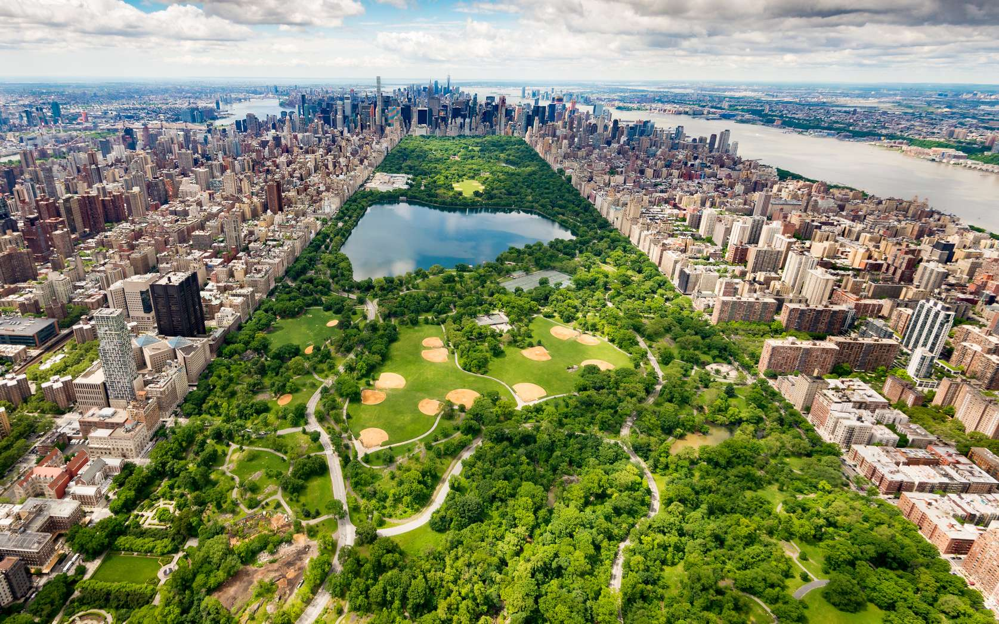
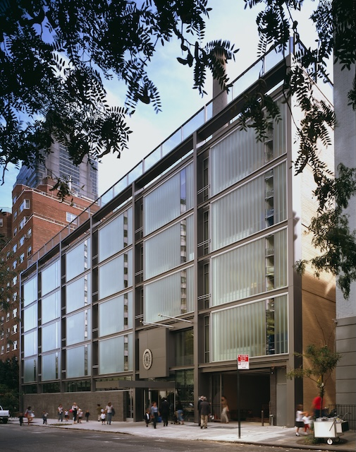

New York, situé dans l'État de New York est la plus grande ville des États-Unis en termes d'habitants et l'une des plus importantes du continent américain, ainsi que du monde. Elle se situe dans le Nord-Est du pays, sur la côte atlantique, à l'extrémité sud-est de l'État de New York. La ville de New York se compose de cinq arrondissements appelés boroughs : Manhattan, Brooklyn, Queens, le Bronx et Staten Island.
De plus, New-York est une ville très touristique avec 50 millions de visiteurs annuellement. En effet, plusieurs lieux culte que l'on retrouve dans le cinéma comme Times Square, « The Crossroads of the World (« Le carrefour du monde ») » et le quartier des théâtres de Broadway font parties des endroits les plus visités au monde. Il y a aussi les "symboles'' de la ville comme la célèbre statue de la liberté ou encore Central Park.
Pour finir, New-York est aussi en tête de tête de la triade des grands centres financiers mondiaux suivie par Londres et Hong-Kong. Le quartier financier de New York, ancré par Wall Street dans le Lower Manhattan, fonctionne comme la « capitale financière du monde », abritant les deux plus grandes bourses du monde par capitalisation, le New York Stock Exchange (Bourse de New York) et le NASDAQ.
La communauté française de la circonscription consulaire de New York est estimée entre 60 000 et 70 000 personnes. Parmi elles, 37 000 Français et membres étrangers de famille de Français sont inscrits au Registre des Français établis hors de France d'après le consulat général de France à New York.
En plus de recueillir des Français, la ville de New York abrite un peu de la culture française. En effet, elle regorge de restaurants français comme la "Petite boucherie" et la " Boucherie Union Square". IL y a aussi des boutiques de luxe françaises comme Dior.
Site du restaurantPour finir, à New York City, il y a un lycée français dans lequel 1179 élèves peuvent bénéficier du système français à l'étranger. Le lycée français de New York accueille des élèves de la petite section à la terminale, c'est-à-dire quinze niveaux. Les élèves peuvent donc passer le brevet, ainsi que le baccalauréat.
| Population | 8,258 millions |
| Maire | Éric Adams |
| Date de fondation | 1624 |
| Superficie | 783,8 km^3 |
| Altitude | 10 m |